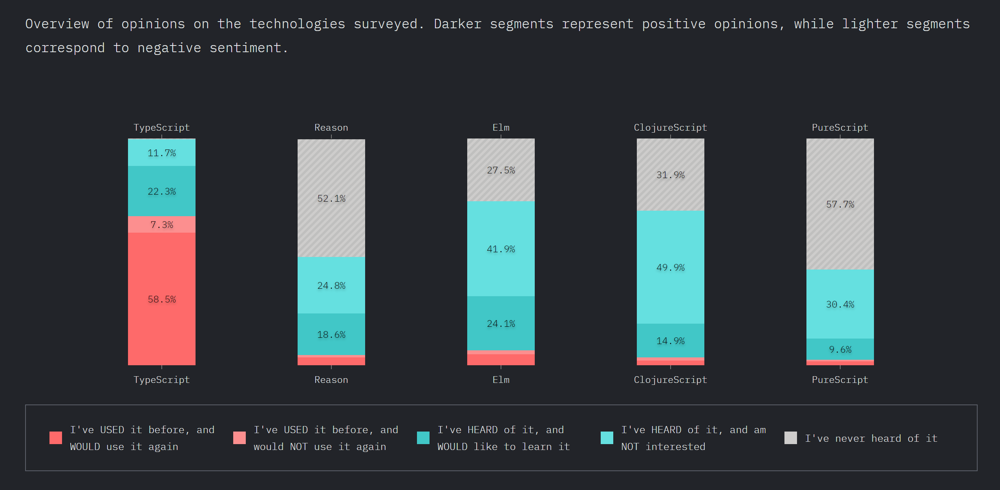

Hello World: Markup und DOM
<!DOCTYPE html>
<html>
<head>
<title>Hello World!</title>
</head>
<body>
<div id="log"></div>
<script>
var element = document.getElementById("log");
element.innerHTML = "<h1>Hello World</h1>";
</script>
</body>
</html>
Hello World: API
<!DOCTYPE html>
<html>
<body>
<script>
document.title = 'Hello World 3';
var div = document.createElement('div');
var h1 = document.createElement('h1');
h1.textContent = 'Hello World';
div.appendChild(h1);
document.body.appendChild(div);
</script>
</body>
</html>
Hello World: node
node -e "console.log('Hello World');"
Hello World: DevTools

Object
let map = {
feld1: 'Huhu',
zweites$Feld: "Auch sowas geht!"
};
console.log(typeof map === "object"); // true
console.log(map.feld1); // Huhu
console.log(map["zweites$Feld"]); // possible as well
map.hund = "Ganz neu geht auch";
map.f = function() { return "Aha!" };
delete map.hund; // delete
console.log(map.hund); // undefined
Runtime Types
let string = "String";
typeof string === "string";
let int = 1;
typeof int === "number";
let float = 1.0;
typeof float === "number";
let bool = true;
typeof bool === "boolean";
let func = function() {};
typeof func === "function";
typeof doesNotExist === "undefined";==, ===
// == tries conversions, will confuse you`
"dog" == "dog";
1 == true;
2 != false;
2 != true;
0 == false;
-1 != false;
-1 != true;
1 == "1";
1 == "1.0";
// === without conversion, always take this
"dog" === "dog";
1 !== true;
1 !== false;
1 === 1;
1 !== "1"undefined and null
let obj = {
a: null,
b: undefined,
d: "d",
e: "e"
};
typeof obj.a; // => "object"
typeof obj.b; // => "undefined"
typeof obj.c; // => "undefined"
obj.d = null;
typeof obj.d; // => "object"
obj.e = undefined;
typeof obj.e; // => "undefined"Array
let array = ["a", "b", "c"];
let el = array[2];
array[1] = 20;
typeof array === "object";
// adds 4
array.push(4);
// at pos 1 remove 2 elements
array.splice(1, 2);
// at pos 1 remove 0 elements and insert "x"
// Zudem wird an Position 1 "x" hinzugefügt
array.splice(1, 0, "x"); string
let s1 = 'Hallo, ';
let s2 = "Olli's Oma";
let s3 = s1 + s2;
s3 === "Hallo, Olli's Oma";
s3[1] === "a";
s3.charAt(1) === s3[1];
Functions
function f2() {
console.log("Called!");
}
let result2 = f2();
result2 === undefined;
let f1 = function(p1, p2) {
return p1 + p2;
};
let result1 = f1(1,2);
result1 === 3;
After JS5: Reference
* https://exploringjs.com/es6/ (ES2015) * https://exploringjs.com/es2016-es2017.html * https://exploringjs.com/es2018-es2019/index.html * https://exploringjs.com/tackling-ts/index.html * https://kangax.github.io/compat-table/es2016plus/Build Process
- ES6, 7, 8 - und JSX-Code must be converted to ES 5/6
- Tools
- Babel (Compiler)
- Webpack (Bundler)
- Webpack Dev Sever (HTTP Server with Hot Reload)
ES2020: nullish coalescing operator
console.log(null || 'right');
// right
console.log(undefined || 'right');
// right
console.log("" || 'wrong');
// wrong
console.log(0 || 'wrong');
// wrong
console.log(false || 'wrong');
// wrong
console.log(null ?? 'right');
// right
console.log(undefined ?? 'right');
// right
console.log("" ?? 'wrong');
// ""
console.log(0 ?? 'wrong');
// 0
console.log(false ?? 'wrong');
// false
ES6: Classes
class Person {
constructor(name) {
this._name = name;
}
get name() {
return this._name;
}
}
class Programmer extends Person {
constructor(name, language) {
super(name);
this.language = language;
}
code() {
return this.name + " codes in " + this.language;
}
}const programmer = new Programmer('Erna', 'JavaScript');
console.log(programmer.code());
console.log(programmer instanceof Programmer); // true
console.log(programmer instanceof Person); // trueES6: Arrow Functions
const displayInPage = (text) => {
return document.body.innerHTML +=
`${text}
`;
};const displayInPage = text => document.body.innerHTML += `${text}
`;
ES6: Extended Object Literals
const name = 'Oma';
const person = {
// ES5: name: name
name,
// ES5: toString: function()
toString() {
return this.name;
}
};
console.log(person.name); // Oma
console.log(person.toString()); // Oma
ES6: Modules, Imports und Exports
ES6: Export of a single class
// Person.js
class Person {
// ...
}
export default Person;
ES6: Import
// Programmer.js
import Person from './Person';
export default class Programmer extends Person {
// ...
}
ES6: Named Export and Import
// util.js
export function displayInPage(text) {
document.body.innerHTML +=
`${text}
` ;
}
// or
export { displayInPage };
import {displayInPage} from "./util";
displayInPage('Hello, World');
import {displayInPage as display} from "./util";
display('Hello, World');
import * as util from "./util";
util.displayInPage('Hello, World');
ES6: Destructuring of Objects
const person = {
name: 'Olli',
address: {
city: 'Hamburg'
},
email: 'oliver.zeigermann@gmail.com'
};
const {name, notThere} = person;
console.log(`name=${name}`);
// name=Olli
console.log(`notThere=${notThere}`);
// notThere=undefined
const {address: {city}} = person;
console.log(`city=${city}`);
//city=Hamburg
ES6: Destructuring of Parameters
const person = {
name: 'Olli',
address: {
city: 'Hamburg'
},
email: 'oliver.zeigermann@gmail.com'
};
function print({email: contact}) {
console.log(`contact=${contact}`);
}
print(person);
// contact=oliver.zeigermann@gmail.com
function g({name: x, y, z=10}) {
console.log(`x=${x}`); // x=olli
console.log(`y=${y}`); // y=undefined
console.log(`z=${z}`); // z=10
}
g({ name: 'olli' });
ES6: Destructuring of Arrays
const [a, b] = [1, 2];
console.log(`a=${a}`);
// a=1
console.log(`b=${b}`);
// b=2
const [, b] = [1, 2];
console.log(`b=${b}`);
//b=2
ES6: for..of
Iterate over everything that is 'iterable'
for (const e of array2) {
console.log(e);
}
// Hi
// Olli
// how are you
// ?
ES6: Spread-Operator
Everything that is 'iterable' can be transformed into single parameters
const array1 = ['Olli', 'how are you'];
const array2 = ['Hi', ...array1, '?'];
console.log(array2);
// => ["Hi", "Olli", "how are you", "?"]
console.log(...array1);
// => Hi Olli how are you ?
ES2018: Spread in object literals
const obj1 = { foo: 'bar', x: 42 };
const obj2 = { foo: 'baz', y: 13 };
const mergedObj = { ...obj1, ...obj2 };
console.log(mergedObj)
// { foo: "baz", x: 42, y: 13 }
ES6: Template Literals
Multi-Line String-Literals with Gaps
const person = 'Oma';
const language = 'Haskell';
console.log(`${person} programs
${10 * 1024 * 1024} lines of code
in ${language}.`);
// Output:
// Oma programs
// 10485760 lines of code
// in Haskell.
Tagged Template Literals
Mini-DSLs: Template-Literals with tag
const expanded = tag`${person} codes in ${language}.`;
console.log(expanded);
//whatever you want
function tag(strings, ...values) {
console.log(strings);
//[ '', ' codes in ', '.' ]
console.log(values);
//[ 'Oma', 'Haskell' ]
return 'whatever you want';
}
fetch
Browser API to load and save data
fetch as a simple GET
const url = `${BACKEND_URL}${path}`;
fetch(url)
.then(response => response.json())
.then(json => /* ... */)
.catch(ex => console.error('request failed', ex));
fetch sending JSON using POST
const url = `${BACKEND_URL}${path}`;
const objectBeSaved = ...;
fetch(url, {
method: 'POST',
headers: {
'Accept': 'application/json',
'Content-Type': 'application/json'
},
body: JSON.stringify(objectBeSaved)
})
.then(json => response.status === 201 ? /* success */ :
/* failure */)
.catch(ex => console.error('request failed', ex));
Promises
A Promise will resolve to a value, be rejected or abort with an error
- If it resolves this might be right now or in the future
- In any case a reaction will be asynchronous
fetch with async/await
async/await recommended alternative to explicit Promise
async function loadGreetings() {
try {
const response = await fetch('http://localhost:7000/greetings');
const json = await response.json();
// success: do something with json
} catch (err) {
console.error("Loading failed: ", ex);
}
}
Einführung: Die Sprache TypeScript
TypeScript is a superset of JavaScript that compiles to plain JavaScript ( http://www.typescriptlang.org/)
- Erweitert JavaScript um ein Typen System
- Jeder gültige JavaScript Code ist auch gültiger TypeScript Code
- Mittels des TypeScript Compilers wird aus TS Code JavaScript Code
TypeScript Grundlagen
Typ-Angaben werden hinter einen Bezeichner geschrieben
// Variablen können Typ-Informationen bekommen
let foo: string;
foo = 'yo';
// Error: number: This type is incompatible with string
foo = 10;
// Funktionen
function sayIt(what: string): string {
return `Saying: ${what}`;
}
sayIt('Klaus'); // ok
sayIt(10); // error
// Arrow Funktionen
const sayIt = (what: string): string => `Saying: ${what}`;
sayIt('Moin');
sayIt(123); // Error: Argument of type '123' is not assignable
// to parameter of type 'string'.
Eingebaute Typen
// string
let city: string = 'Hamburg';
// boolean
let isDone: boolean = false;
// number
let theAnswer: number = 42;
// array (note the [])
let cities: string[] = ['Hamburg', 'Barcelona'];
// alternative:
let languages: Array<string> = ['JavaScript', 'TypeScript'];
// void
function log(s: string): void { /* ... */ }
Eingebaute Typen: any und unknown
// any: kann alle Typen aufnehmen, Typ-Prüfung ist ausgeschaltet
let theUnknown: any = 'Who cares';
theUnknown = 666; // ok
theUnknown = true; // ok
let a: number = theUnknown; // ok
function loadData(): any { return "" // ok }
let b:number = loadData(); // ok
Eingebaute Typen: any und unknown
// unknown: kann ebefalls alle Typen aufnehmen, erzwingt aber vor der Verwendung Typ-Prüfung
function loadData(): unknown { return "" // ok }
let b = loadData();
b.toUpperCase(); // ERROR
if (typeof b === "string") {
// b ist jetzt string (typeof ist Laufzeitprüfung!)
b.toUpperCase(); // OK
}
Typen können abgeleitet (inferred) werden
let city = 'Hamburg'; // city ist ein String
city = 42;
// Fehler: [ts] Type '42' is not assignable to type 'string'.
// Explizite Angabe eines Types (parameter)
// und abgeleiteter Typ (Return Type der Funktion)
function sayIt(what: string) {
return `Saying: ${what}`;
}
const said: string = sayIt('Hello TypeScript'); // ok
const saidItWrong: number = sayIt('Hello TypeScript'); // error!
Type Check ausschalten
Mit @ts-ignore (als Kommentar) kann wird die Überprüfung der nächsten Zeile
ausgeschaltet:
let city:string = "Hamburg";
city = 20259; // error: [ts] Type '20259' is not assignable to type 'string'.
// @ts-ignore
city = 20259; // ok
Nützlich in corner cases, die nur schwer mit TypeScript abbildbar sind oder bei Migration
null und undefined
null muss explizit zugelassen werden (strictNullChecks):
let city:string = null; //Type 'null' is not assignable to type 'string'.
let optionalCity:string|null = null; // OK
undefined muss ebenfalls explizit zugelassen werden:
let city:string = undefined; //Type 'undefined' is not assignable to type 'string'.
let optionalCity:string|undefined = undefined; // OK
let optionalCity:string|undefined|null = null; // OK
Optionale Parameter können mit ? gekennzeichnet werden (erlauben dann auch
undefined)
function greet(name: string, greeting?: string) {
console.log(`${greeting || 'Hello'}, {name}`);
}
greet('Susi', 'Moin')// Moin, Susi
// 2. Parameter ist optional:
greet('Klaus'); // Hello, Klaus
greet('Peter', null); // Argument of type 'null' is not assignable
// to parameter of type 'string | undefined'.
Eigene Typen
Mit interface und typekönnen eigene Typen (Objekt-Strukturen)
definiert werden:
// Komplexer Typ
interface Person {
name: string; // Pflicht
livesIn?: string; // Optional
}
// Alternativ (interface und type fast synonym)
type Person = { name: string; livesIn?: string; }
const susi: Person = { // OK
name: 'Klaus',
livesIn: 'Hamburg'
};
const klaus: Person = { // OK (livesIn ist optional)
name: 'Klaus'
}
const helmut: Person = {} // Error: Property 'name' is missing
const lukas: Person = {
name: 'Lukas',
profession: 'Lokführer'
} // Error: 'profession' does not exist in type 'Person'.
Eigene Typen II
Eigene Objekt-Typen können sowohl "Attribute" als auch Funktionen enthalten:
// Komplexer Typ
type Person {
name: string; // Pflicht
greet(greeting: string): string;
}
const p:Person = {
name: "Klaus",
greet(greeting: string) {
return `${greeting}, ${this.name}`
}
}
p.greet("Hello"); // OK
p.greet(123); // ERR: Argument of type '123' is not
// assignable to parameter of type 'string'.
const wrong:Person = {
name: "Susi", // OK
greet(greeting: number) { return "hello" }
// ERR: Type '(greeting: number) => string' is not assignable to
// type '(greeting: string) => string'.
// Types of parameters 'greeting' and 'greeting' are incompatible.
// Type 'string' is not assignable to type 'number'.
}
Union Types
Variablen, Parameter etc. können mehr als einen Typ annehmen:
type Person = { name: string };
type Movie = { title: string };
function printNameOrTitle(obj: Person | Movie) {
console.log(obj.title); // ERR: Property 'title' does not
// exist on type 'Person | Movie'
if ("title" in obj) { // Abfrage ist ein "Type Guard"
// obj ist Movie hier, title ist definiert
console.log(obj.title);
} else {
// obj ist Person hier: name ist definiert
console.log(obj.name);
}
}
printNameOrTitle({name: "Klaus"}); //OK
printNameOrTitle({title: "Pulp Fiction"}); //OK
printNameOrTitle({label: "Save"}); // ERR
Type Guards
Durch einen Type Guard können Typen "eingeengt" werden
type Person = { name: string };
type Movie = { title: string };
// Wenn diese Funktion true zurueckgibt, nimmt Typescript an,
// dass das übergebene Argument vom Typ Movie ist
function isMovie(candidate: any): candidate is Movie {
return ("title" in candidate);
}
function printNameOrTitle(obj: Person | Movie) {
if (isMovie(obj)) {
// movie
}
}
Type Assertions
type Person = { name: string };
type Movie = { title: string };
// Wenn diese Funktion zurueckkehrt (kein Error geworfen wird) nimmt Typescript an,
// dass das übergebene Argument vom Typ Movie ist
function assertIsMovie(candidate: any): asserts candidate is Movie {
if ("title" in candidate) {
return;
}
throw new Error("Candidate is not a movie!")
}
function printTitle(hopefullyAMovie: any) {
assertPersonIsMovie(hopefullyAMovie)
// hopefullyAMovie ist jetzt Movie
hopefullyAMovie.title; // OK
}
String Literal Types
Beispiel: String Aufzählungstyp
// Beispiel:
type View = "POST_LIST" | "POST_EDITOR";
const s:View = "POST_LIST"; // OK
const t:View = "POST_LISTE" // FEHLER
function setView(v: VIEW) {
if (v === "POST_LIST") { ... } // ok
if (v === "POST_LISTE") { ... } // error: immer false
}
setView("POST_LIST"); //OK
setView("POST_LISTE"); // ERROR
Why using type systems?
type systems make code easier to maintain
type annotations / inferred types
- can make code more readable
- can make code easier to analyse
- can allow for reliable refactoring (https://code.visualstudio.com/Docs/languages/typescript#_refactoring)
- can allow for generally better IDE support
- can catch some (type related) errors early
Anders Hejlsberg@Build2016: Big JavaScript codebases tend to become "read-only".
https://2019.stateofjs.com
Survey on the state of JavaScript
JavaScript flavors
TypeScript
ease of use and tool support over soundness
- By Microsoft (Anders Hejlsberg)
- Based on ES6/ES7/ES8/ES9/ES10
- Adds optional type annotations, visibility, and decorators
- Compiler checks and removes annotations
- External declarations can add type information to pure JavaScript
- Extensive support in Visual Studio Code and IntelliJ / Webstorm
- supporting people from Java and C# land
Show References works reliably
Refactoring possible
Vue 3.0 based on TypeScript https://twitter.com/newsyc250/status/1063900647853121536
Vue Roadmap: https://github.com/vuejs/vue/projects/6#column-4065494
Basics
// variables can have type information
let foo: string;
foo = 'yo';
// Error: Type 'number' is not assignable to type 'string'.
foo = 10;
// types can be inferred (return type)
function sayIt(what: string) {
return `Saying: ${what}`;
}
const said: string = sayIt(obj);
class Sayer {
what: string; // mandatory
constructor(what: string) {
this.what = what;
}
// return type if you want to
sayIt(): string {
return `Saying: ${this.what}`;
}
}
Nullability
One of my main sources of runtime exceptions when programming Java
Even after many years it is still surprising how many corner cases I miss in complex code
TypeScript
function foo(num: number) {
if (num > 10) {
return 'cool';
}
}
// check required
const fooed: string|void = foo(11);
if (fooed) {
fooed.toString();
}
// or tell the compiler we know better (in this case we actually do)
fooed!.toString();
Types are non-nullable by default in TypeScript
All types nullable by default in TypeScript 1.x
parametric types are compatible if the type to assign from has a more special type parameter * seems most intuitive, allows for obviously wrong code, though (more on that coming up next)
Generic Type information
Types can be parameterized by others
Most common with collection types
let cats: Array<Cat> = []; // can only contain cats
let animals: Array<Animal> = []; // can only contain animals
// nope, no cat
cats.push(10);
// nope, no cat
cats.push(new Animal('Fido'));
// cool, is a cat
cats.push(new Cat('Purry'));
// cool, cat is a sub type of animal
animals.push(new Cat('Purry'));
TypeScript allows for birds and dogs to be cats here :)
let cats: Array<Cat> = []; // can only contain cats
let animals: Array<Animal> = []; // can only contain animals
// error TS2322: Type 'Animal[]' is not assignable to type 'Cat[]'.
// Type 'Animal' is not assignable to type 'Cat'.
// Property 'purrFactor' is missing in type 'Animal'.
cats = animals;
// wow, works, but is no longer safe
animals = cats;
// because those are now all cool
animals.push(new Dog('Brutus'));
animals.push(new Animal('Twinky'));
// ouch:
cats.forEach(cat => console.log(`Cat: ${cat.name}`));
// Cat: Purry
// Cat: Brutus
// Cat: Twinky
The flipside
This code is safe (as we access cats in a readonly fashion)
function logAnimals(animals: Array<Animal>) {
animals.forEach(animal => console.log(`Animal: ${animal.name}`));
}
logAnimals(cats);
- This works in TypeScript (and it should)
- however, potentially not safe, there is nothing to keep us from writing to cats
much despised Java generics excel here as they can actually make that code safe (another difference: Use-site variance )
// Java
void logAnimals(List<? extends Animal> animals) {
animals.forEach(animal -> System.out.println("Animal: " + animal.name));
// illegal:
animals.add(new Animal("Twinky"));
}
Union Types
aka Disjoint Unions aka Tagged Unions aka Algebraic data types
to describe data with weird shapes
depending on some data other data might apply or not
// a disjoint union type with two cases
type Response = Result | Failure;
type Result = { status: 'done', payload: Object }; // all good, we have the data
type Failure = { status: 'error', code: number}; // error, we get the error code
Implementation in TypeScript
function callback(response: Response) {
// works, as this is present in both
console.log(response.status);
// does not work,
// as we do not know if it exists, just yet
console.log(response.payload); // ERROR
console.log(response.code); // ERROR
switch (response.status) {
case 'done':
// this is the special thing:
// type system now knows this is a Result
console.log(response.payload);
break;
case 'error':
// and this is a Failure
console.log(response.code);
break;
}
} any type
can be anything, not specified
can selectively disable type checking
function func(a: any) {
return a + 5;
}
// cool
let r1: string = func(10);
// cool
let r2: boolean = func('wat');
- explicit any supported, but any never inferred
- try to avoid
Structural vs Nominal Typing
- Nominal Typing: types are compatible when their declared types match
- Structural Typing: types are compatible when their structures match
- Java, C#, C++, C all use nominal typing exclusively
- Flow classes are also treated as nominal types
- TypeScript classes are treated as structural types
- Everything else in both Flow and TypeScript uses structural typing
- Elm always uses structural typing with exact matches on Records
Structural Typing for Interfaces
interface NamedObject {
name: string;
}
// this is fine as nominal typing only applies to Flow classes
let namedObject: NamedObject = dog;
// same thing, also fine
let namedObject: NamedObject = {
name: "Olli"
};
// not fine in either, missing name
let namedObject: NamedObject = {
firstName: "Olli"
};
Structural Typing for classes
class Person {
name: string;
}
class Dog {
name: string;
}
let dog: Dog = new Dog();
// yes, correct, as structurally compatible
let person: Person = dog;
// same thing, also correct
let person: Person = {
name: "Olli"
};
Some Type Inference Magic
Consider
class Dog { woof() { } }
const animals = [];
animals.push(new Dog());
both TypeScript and Flow know this is safe, as we have only added Dogs so far
animals.forEach((animal: Dog) => animal.woof());
Adding Cats later and thus changing array type later
class Cat { meow() { } }
animals.push(new Cat());
does not affect TypeScript (correct), but makes Flow fail
Classes in TypeScript
TypeScript has special support for classes
Similar features can be found in Java/C++/C#
- abstract classes and methods
- special shortcut constructors (combined definition of fields and initialization)
- public, private, protected
- decorators (aka Attributes in C# and Annotations in Java)
- readonly properties like in C#
Should you use a type checker?
- don't be fooled: checkers do not make your programs error free
- there seems to be little or no impact on productivity
- initial effort to introduce a checker is low, though
- but a type system is a complex thing, it comes at a cost
My biased recommendation
- your project does not live for long: no
- your project is really simple: no
- there is a chance you will need to refactor the thing: yes
- your system is very important or even crucial for the success of your company: yes
- people enter or leave your team frequently: yes
- you have substantial amount of algorithmic code: yes
object literal type checking
type Basic = {
a: number;
b: string;
}
type BasicAndMore = Basic;
const aha1: Basic = {
a: 10,
b: 'yo',
c: true // nope, assuming you did this in error
};
// works
const aha2: Basic = {
a: 10,
b: 'yo',
c: true
} as Basic;
const more = {
a: 10,
b: 'yo',
c: true
}
// works as well
const aha3: Basic = more;